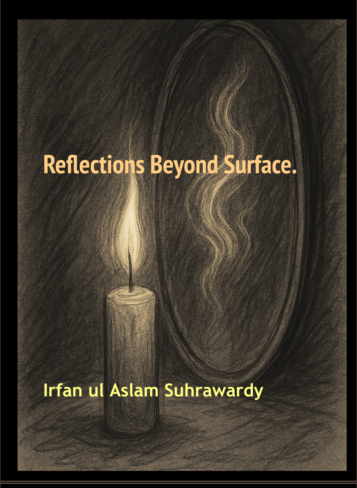

Irfan ul Aslam Suhrawardy
Poet • Author • Reflective Writer
Exploring the depths beneath the surface of experience through poetry, contemplation and reflection.
Poet • Author • Reflective Writer
Exploring the depths beneath the surface of experience through poetry, contemplation and reflection.
Irfan ul Aslam Suhrawardy is a writer and poet whose work reflects themes of love, longing, resilience, and the human condition. Drawing inspiration from nature, rural life, and personal reflection, he seeks to create writing that resonates with both heart and intellect.
Academically, he holds a Master's degree in Computer Applications (MCA) and a Master of Arts in Philosophy (M.A. Philosophy). These disciplines have profoundly influenced his perspective on life, nurturing a balance between analytical reasoning and philosophical reflection. The interplay of logic, critical thinking, and contemplative inquiry frequently finds expression in his poetry and prose, lending his work both intellectual depth and emotional resonance.
Professionally, he works in the banking sector, where regular interaction with people from diverse backgrounds provides valuable insights into human aspirations, relationships, challenges, and resilience. These encounters continually enrich his understanding of the human experience and influence his writing.
His journey with poetry began in his early years, nurtured by a deep appreciation for language and human emotions. Over time, this passion evolved into a sustained literary pursuit, culminating in the publication of his book, Reflections Beyond Surface!. Through his poetry and prose, he seeks to explore the complexities of life while illuminating the emotions and experiences that unite us all.

A collection of reflections exploring spirituality, human experience, silence, meaning and the deeper currents hidden beneath ordinary life.
Notion Press Paperback
Amazon Paperback
Flipkart Paperback
Kindle eBook
Poetry is the echo of silence learning to speak, a mirror where shadows reveal what light conceals.